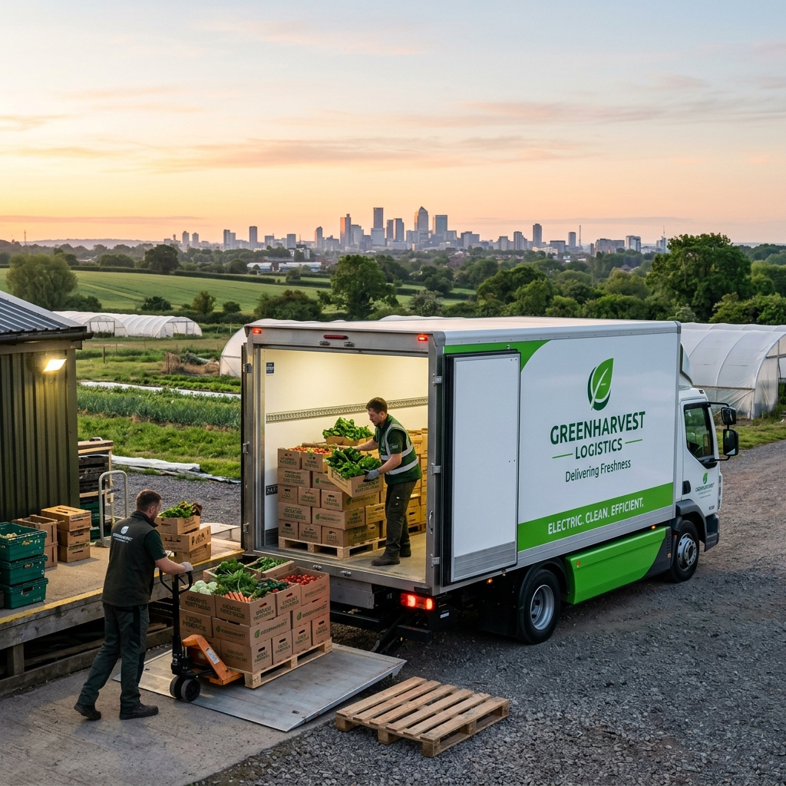

Vrde acompaña procesos de productores a nivel nacional. Desde el establecimiento Ovoro hasta las fincas de aceite agroecológico, generamos puentes transparentes donde el productor fija el precio justo y la tierra dicta los tiempos.

Los productores ingresan al ecosistema Vrde. Disponibilizamos nuestra propuesta organizativa en la gran red "En Conjunto" para sincronizarnos con los ritmos naturales y logísticos.
El pulso constante. Provee alimentos de primera necesidad a las comunidades y proyectos de reventa, asegurando un sostén cotidiano y fresco.
El gran acopio. Sincronizada con los ciclos de la luna, propone grandes volúmenes a costos más bajos. Logística eficiente y mecanización sagrada.
Creá tu Círculo Lunar en 15 segundos, compartí el enlace por WhatsApp con tu grupo y reciban directo de chacra a precio mayorista pagando al cierre en Luna Llena.
Vrde genera puestos de trabajo inmediatos dentro de las comunidades. Espacios mutables donde se materializa la labor: recepción, conservación y armado de pedidos. Cada "Work slot" brinda certidumbre y nos conecta con la naturaleza de estar al servicio del otro.

Convertí tu garaje, local, taller o espacio comunitario en un punto oficial de acopio y soberanía alimentaria. Recibí alimentos frescos directo de chacra en cada Luna Llena y conectá a tus vecinos con precio justo.
Comisiones por volumen total acopiado y generación de puestos de trabajo remunerados para armado y logística en tu comunidad.
Acceso a precios mayoristas directos de chacra para vos, tu familia y los prosumidores más cercanos sin intermediarios.
Panel Gestor propio con PIN, control de stock, tickets de entrega, pasarela de pagos con tu propio CBU y difusión en la web.
Rutas sincronizadas en cada ciclo lunar. Los camiones bajan la mercadería consolidada en tu puerta con frío y trazabilidad.
Simula el impacto de participar en las compras comunitarias frente al mercado tradicional. Soberanía alimentaria con transparencia.
Elegí cómo querés integrarte a este ecosistema y ocupá tu lugar en la red.